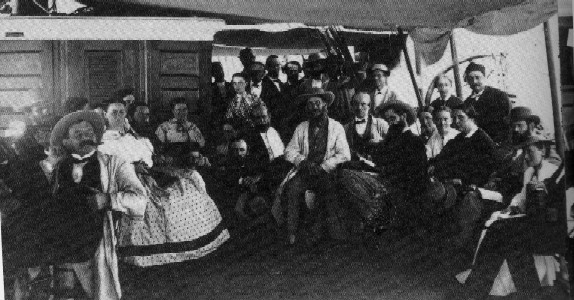

On Board the Quaker City

picture courtesy of Mark Twain
"We
have got a crowd
of tiptop people, & shall have a jolly, sociable, homelike trip of
it for the next five or
six months...I am going on this trip for fun only." letter to William Bowen, 6.7.1967, New
York, NY, as
quoted in Mark
Twain's Letters, Vol. 2
"I am resigned
to Rev. Mr. Hutchinson's or anybody else's supervision. I don't mind
it. I am fixed. I have got a
splendid, immoral,
tobacco-smoking, wine-drinking, godless room-mate
who is as good & true & right-minded
a man as ever lived--a man
whose blameless conduct & example will
always be an eloquent sermon to all who
should come within their
influence." letter
to Jane Lampton Clemens and Family,
6.1.1867, New York, NY, as
quoted in Mark Twain's Letters, Vol.
2
back to ship exterior